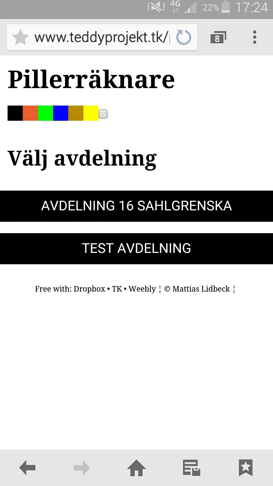
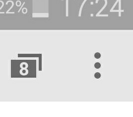
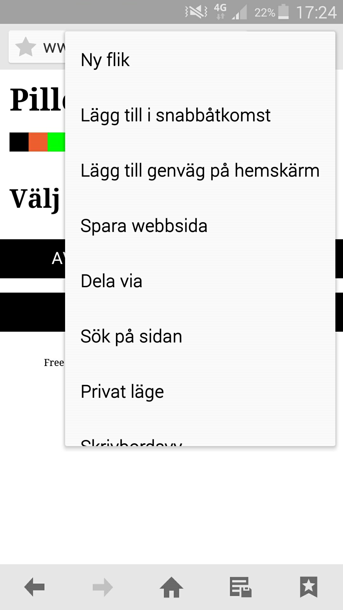
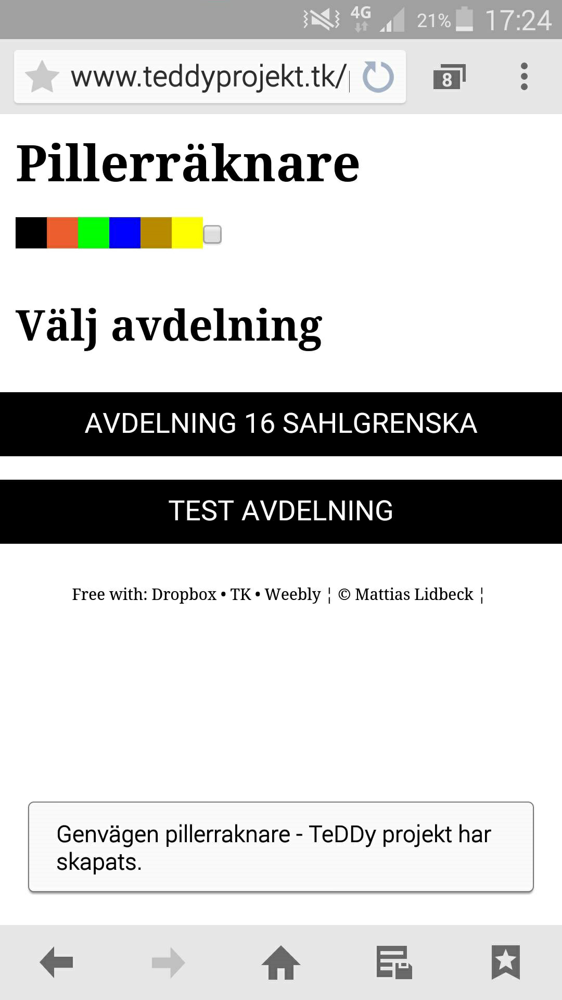

1. Öppna webbläsaren i din android telefon
2. Öppna sidan
2.1 Skriv in adressen till sidan i adressfönstret. (Eller scanna QR-koden om du är bekant med det)
2.2 Låt sidan ladda klart.
3. Lägg till genväg på hemskärm
3.1 Klicka på ikonen med 3 prickar på raden, eller annan menyliknande ikon. Om nedan exempel inte finns på din specifika telefon.
3.2 Nu öppnas en meny.
3.3 Välj alternativet "Lägg till genväg på hemskärm".
3.4 "Lägg till" menyn kommer nu fram. Du kan här välja att ändra namn (onödigt)
4. KLART!
4.1 Webbappen är nu installerad och lägger sig på hemskärmen.
